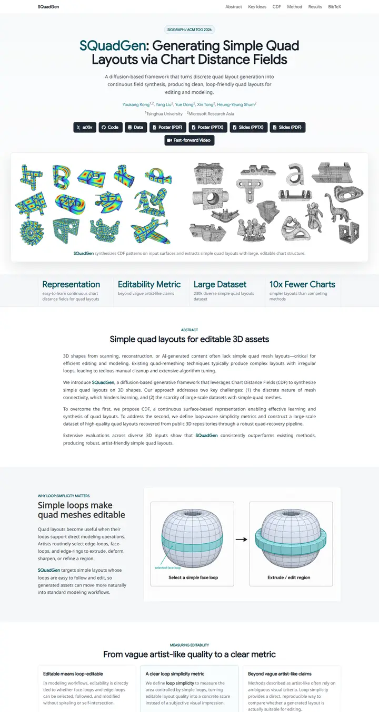

SQuadGen: Generating Simple Quad Layouts via Chart Distance Fields
A clean engineering spec sheet: cool white, slate ink, one deep-teal signal, and every figure clipped into a ruled 8px card.

Checked against the rendered page. Google Sans loads only weight 400, so 700/800 headings are synthesised bold; one side h2 falls back to Bulma's Noto Sans 600 #363636.
Why it is here
Clean modern sans with a teal accent. A well-composed hero is followed by a framed teaser card and a four-column stats band. The alternating two-column explainer and three-card metric section give the page good rhythm.
Overview
Color Palette
Typography
Google Sans
SQuadGen: Generating Simple Quad Layouts via Chart Distance Fields
Abstract · Method · Results · BibTeX — 0123456789
Noto Sans
SQuadGen: Generating Simple Quad Layouts via Chart Distance Fields
Abstract · Method · Results · BibTeX — 0123456789
Castoro
SQuadGen: Generating Simple Quad Layouts via Chart Distance Fields
Abstract · Method · Results · BibTeX — 0123456789
Spacing & Shape
Page Modules
Guidelines
More like this

Scaling Text-Rich Image Understanding via Code-Guided Synthetic Multimodal Data Generation
A university press catalogue: small-caps serif title, a colour wheel of specimens and an earthy bar chart.

DICE-BENCH: Evaluating the Tool-Use Capabilities of Large Language Models in Multi-Round, Multi-Party Dialogues
A Nerfies page with a game-box cover: a charcoal dice banner stamps the identity, then pastel brand-tinted pills and a grey carousel strip carry you into a quiet two-column method read.

TUNA: Comprehensive Fine-grained Temporal Understanding Evaluation on Dense Dynamic Videos
A benchmark that leads with its scoreboard: a fish-logo small-caps wordmark, a gradient venue line, then a full-width grey-headed leaderboard with zebra rows and blue model links.

Gesturing Toward Abstraction: Multimodal Convention Formation in Collaborative Physical Tasks
A seminar handout on clean paper: a big soft headline, six charcoal tabs, and a teal-and-magenta comic strip of hands explaining blocks.

Making Multimodal LLMs Reliable Chart Data Extractors: A Benchmark and Training Framework
A lab notebook opened to its best page: a framed video like a monitor bezel, emoji in the headline, and every figure pinned with a soft shadow.

What If Moderation Didn't Mean Suppression? A Case for Personalized Content Transformation
A quiet reading room with a purple ribbon on the lectern: slate sans headlines, Garamond prose, and one warm amber note pinned to the wall.